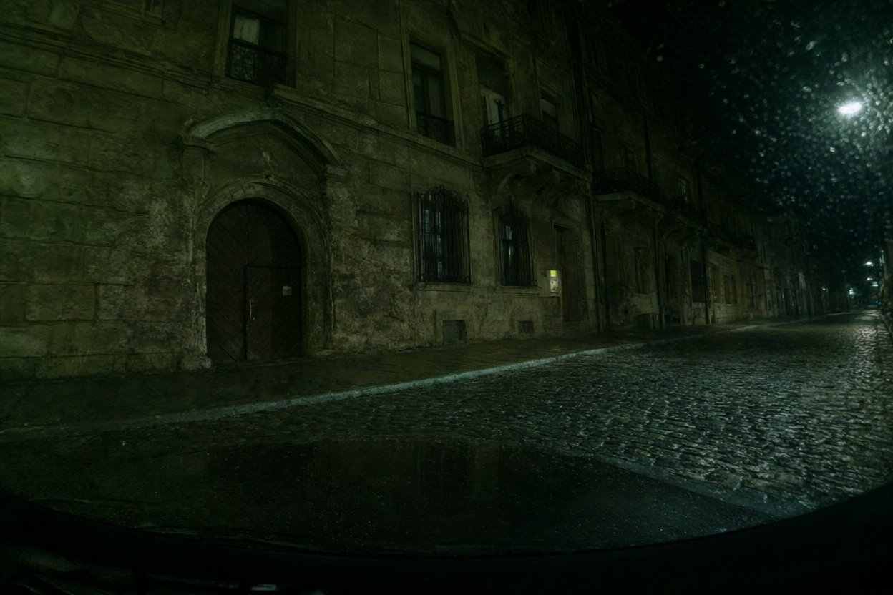
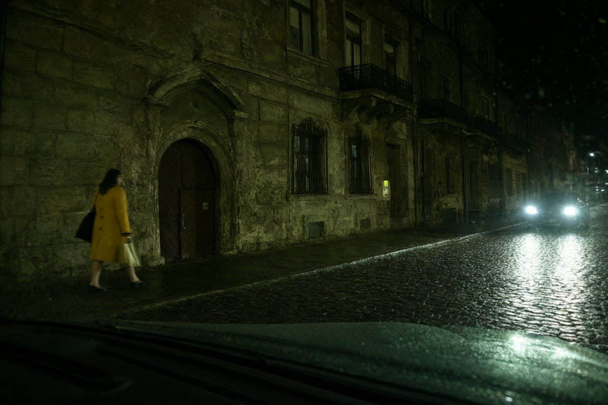
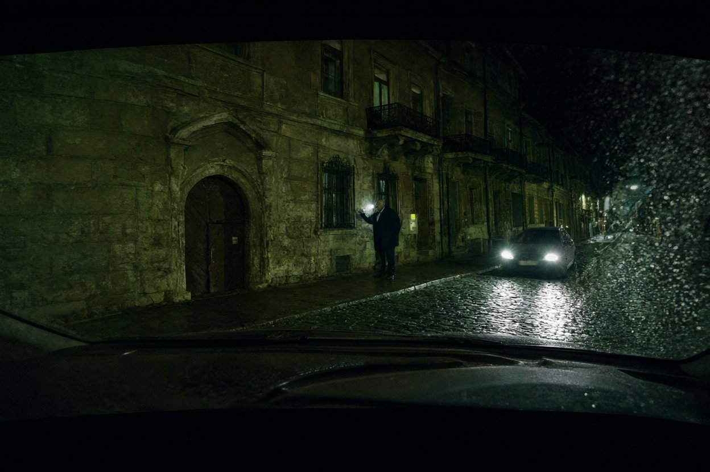

Слідчий Галицького ВП ГУНП у Львівській області капітан поліції Стасюк О.М., у присутності понятих, провів огляд відеозапису, наданого гр. Кульчицьким Тарасом Ігоровичем 15.11.2024 (заява від 15.11.2024, вх. № 2213). Відеозапис записаний відеореєстратором 70mai, встановленим в автомобілі Toyota Land Cruiser 300, державний номерний знак ВС 7741 НК. Файл фрагмента: 12.11.2024, 19:50:00 – 21:00:00.
| Пристрій | відеореєстратор 70mai (камера передня) |
|---|---|
| Транспортний засіб | Toyota Land Cruiser 300, чорний, ВС 7741 НК |
| Місце зйомки | м. Львів, вул. Ґерданська (навпроти будинку № 9) |
| Умови | нічна зйомка, дощ, вуличне освітлення відсутнє (відключення електроенергії) |
Під час огляду встановлено наступне. Відеозапис переглянуто повністю. Для протоколу відібрано такі кадри:

2024/11/12 19:54:10 70mai ВС7741НК
2024/11/12 19:58:32 70mai ВС7741НК
2024/11/12 20:46:05 70mai ВС7741НККопії кадрів додаються до протоколу. Відеофайл поміщено на електронний носій та опечатано. Зауважень і заяв від присутніх не надходило. Огляд закінчено о 16:40.